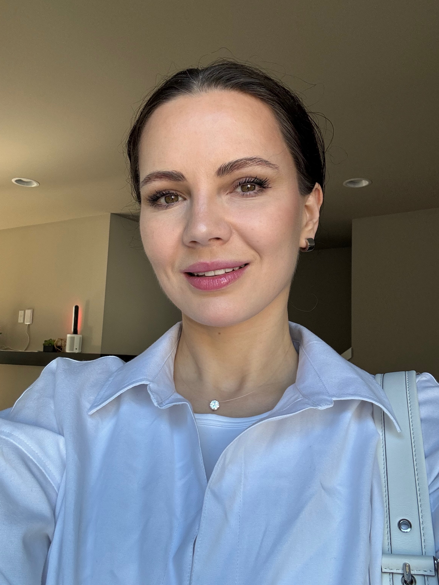

Anna Seregina
Computer Science Student | Aspiring Full-Stack Developer
Computer Science student at Lake Washington Institute of Technology with previous software development experience and a background in Applied Mathematics.
I enjoy building practical applications, solving technical problems, and continuing to grow my skills in Java, Python, JavaScript, SQL, and web development.
